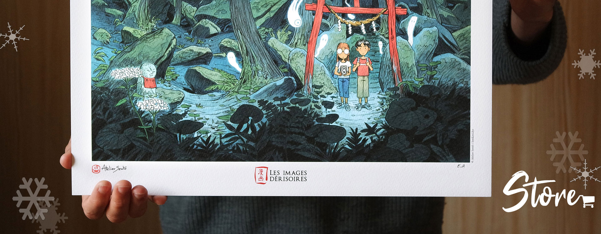

On this page, we displayed our different products available online. We don't sell directly the products by ourselves. You have to follow the links to the publisher's websites to purchase the items.
On this page, we displayed our different products available online. We don't sell directly the products by ourselves. You have to follow the links to the publisher's websites to purchase the items.
Bande dessinée
Chaque été, dans un village japonais, on célèbre la Fête des ombres, un festival pendant lequel les habitants accueillent les âmes errantes des morts. Naoko, une jeune femme un peu rêveuse, a pour mission de guider l’une de ces ombres, un homme mystérieux hanté par un terrible secret. Si elle ne parvient pas à l’aider avant l’été suivant, l’ombre sera perdue à jamais. Au fil des saisons naissent des sentiments qui les rapprochent et brouillent la frontière entre le monde des vivants et des morts.
Artbook
Discover another face of Japan through the watercolors of Atelier Sentô. Gathering more than 300 watercolors, sketches and prints, this book is a walk off the beaten track, along the rice fields, looking for temples lost in the forest and the spirits that inhabit them.
Graphic novel 128 pages
Onibi: Diary of a Yokai Ghost Hunter follows the adventures of two young foreigners as they travel to a remote and mysterious corner of Japan. Along the way, they purchase an old camera that has the unique ability to capture images of Japan's invisible spirit world. Armed with their magical camera, they explore the countryside and meet people who tell them about the forgotten ghosts, ghouls and demons who lie in wait ready to play tricks on them. These Yokai, or supernatural beings, are sometimes kind, sometimes mischievous, and sometimes downright dangerous!
Available in :
International shipping
Size: 30x40 cm
High quality art print created by the French publisher "Les Images Dérisoires" on a Tintoretto Gesso 300gr paper. Each of the 100 prints is numbered, hand stamped and signed.
International shipping
Size: 30x40 cm
This art print is a reproduction of the illustration used for the cover of Onibi graphic novel. High quality art print created by the French publisher "Les Images Dérisoires" on a Tintoretto Gesso 300gr paper. Each of the 50 prints is numbered, hand stamped and signed.